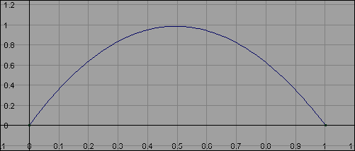

可以创建两个共享公共属性且属于同一角色集的动画片段的融合。融合将通过从一个片段到另一个片段的运动来创建平滑过渡。请参见融合片段。
融合动画片段
- 选择要融合的片段（具有一个或多个公用属性）。
- 执行下列操作之一：
- 在“Trax 编辑器”(Trax Editor)工具栏上，单击“创建融合”(Create Blend)
 。
。
- 在 Trax 菜单栏中，选择。
Maya 将创建融合，在片段之间显示为绿色箭头。
- 在“Trax 编辑器”(Trax Editor)工具栏上，单击“创建融合”(Create Blend)
您可以匹配融合片段之间的姿势，以便与动画序列相符。请参见匹配姿势和对齐片段。
对于重叠的片段，请在轨迹视图区域中调整片段的位置，从而使动画从一个片段平滑过渡到另一个片段。
编辑融合的值
- 选择融合区域（绿色融合箭头），然后打开属性编辑器。
- 设置融合的“权重”(Weight)属性或“旋转融合”(Rotation Blend)。
编辑融合的权重
- 选择要在“曲线图编辑器”(Graph Editor)中打开其曲线的融合。
- 执行下列操作之一：
- 在 Trax 工具栏中，单击“图形动画曲线”(Graph Anim Curves)
 。
。
- 在 Trax 菜单栏中，选择。
此时将出现“曲线图编辑器”(Graph Editor)，且选定动画融合的权重曲线将以带框架的形式显示在其图表视图中。
默认情况下，融合的权重曲线范围从 0 到 1，且为线性的。请参见融合。
在片段重叠的第一帧，顶部片段完全控制运动，底部片段不控制运动。在片段重叠的最后一帧，底部片段控制全部运动，顶部片段不控制运动。
在播放过程中，融合中第一个片段的控制会随第二个片段控制的增加而减少。
- 在 Trax 工具栏中，单击“图形动画曲线”(Graph Anim Curves)
- 将关键帧添加到融合权重曲线之前，必须先在曲线图编辑器的工具栏中禁用“时间”(Time)和“值”(Value)捕捉（“编辑 > 捕捉”(Edit > Snap) >
 ）。
）。
否则，Maya 将不允许融合权重曲线上的关键帧具有浮点值。
- 通过执行下列操作之一，调整曲线的形状以更改每个片段在融合期间具有的控制百分比：
- 移动关键帧或关键帧的切线。
选择权重曲线的关键帧或切线，然后从 Maya 工具箱中选择“移动工具”(Move Tool)并使用鼠标中键拖动关键帧或其切线，以更改曲线的形状。例如，可以重新定形默认融合权重曲线，使其类似于下图：
在该曲线中，融合中的第一个片段在融合开始时具有 100% 控制，在中间减少为 0%，然后在融合结束时增加为 100% 控制。底部片段在融合期间也进行了相应的更改，从 0% 到 100% 再到 0% 控制。
- 将关键帧添加到融合曲线。
从“曲线图编辑器 关键帧”(Graph Editor > Keys)菜单中选择“插入关键帧工具”(Insert Keys Tool)或“添加关键帧工具”(Add Keys Tool)，然后在曲线上单击鼠标中键以将其他关键帧添加到曲线。然后可以使用这些新关键帧改变权重曲线的形状。
- 如果要更改权重曲线类型，请删除融合并添加所需类型的新融合。
- 如果融合没有提供所需的精确过渡，请添加运动翘曲，以便细调过渡。请参见在片段顶部设定关键帧。
删除融合
- 选择要移除的融合。请参见上述步骤。
- 按 Delete 键。